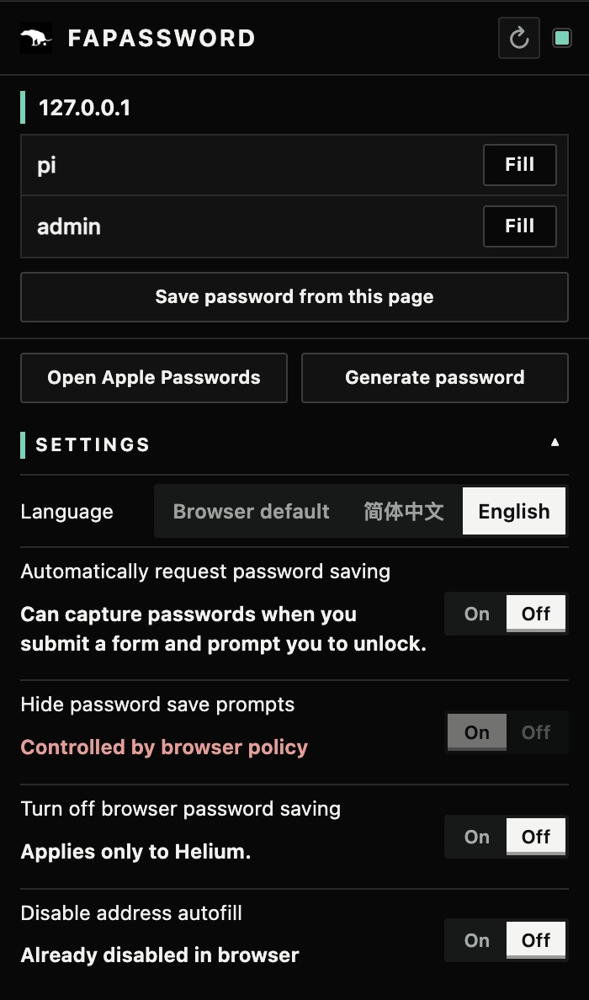

macOS / CHROMIUM EXTENSION
用 Apple 密码。
不用换浏览器。
在 Chrome、Edge 或 Brave 里，直接填入 iCloud 钥匙串已有的登录信息。不必再维护一份密码。
查看安装方式macOS 14+ · 开源 · 手动安装

从选账号，
到填好密码。
- 在登录框或工具栏选账号
- 扩展按当前站点列出已保存的登录信息。它会避开已识别的一次性验证码字段。
- 六位验证码可以整段粘贴
- 空格、换行和全角数字都会自动处理。同一次浏览器运行通常只需验证一次；退出或断连后需要重新验证。
- 仍由 macOS 授权
- 读取密码时，系统仍可能要求 Touch ID 或登录密码。会话密钥只留在内存，不写入磁盘。
GET STARTED
从 GitHub 手动安装
它不在 Chrome Web Store。需要启用 iCloud 密码，并先关闭 Apple 官方 iCloud Passwords 扩展。浏览器兼容性取决于 macOS 与浏览器版本。